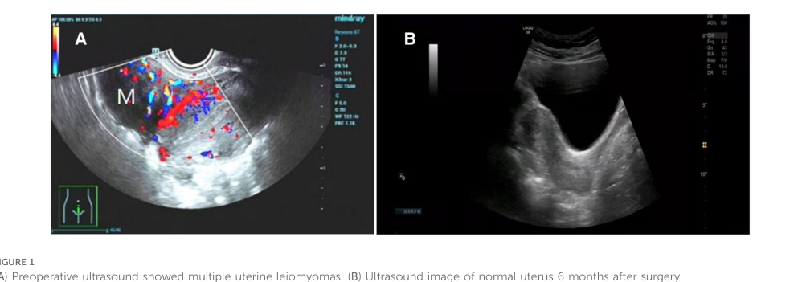

Fallopian tube benign neoplasm is a non-metastasizing neoplastic process of the fallopian tube, including epithelial and mesenchymal benign tumors that can present with pelvic symptoms, adnexal mass effect, or incidental imaging findings.
Ask a research question about Fallopian tube benign neoplasm. OpenScientist will conduct autonomous deep research using the Disorder Mechanisms Knowledge Base and PubMed literature (typically 10-30 minutes).
Do not include personal health information in your question. Questions and results are cached in your browser's local storage.

Conditions with similar clinical presentations that must be differentiated from Fallopian tube benign neoplasm:
name: Fallopian tube benign neoplasm
creation_date: "2026-05-27T00:00:00Z"
category: Gynecologic Neoplasm
description: >-
Fallopian tube benign neoplasm is a non-metastasizing neoplastic process of
the fallopian tube, including epithelial and mesenchymal benign tumors that
can present with pelvic symptoms, adnexal mass effect, or incidental imaging
findings.
disease_term:
preferred_term: fallopian tube benign neoplasm
term:
id: MONDO:0000645
label: fallopian tube benign neoplasm
parents:
- benign female reproductive system neoplasm
- fallopian tube neoplasm
synonyms:
- benign neoplasm of fallopian tube
- benign fallopian tube tumor
references:
- reference: PMID:32317841
title: "Papillary Cystadenofibroma of Fallopian Tube: Case Report with a Literature Review."
- reference: PMID:32522722
title: Giant serous adenofibroma of the fallopian tube.
- reference: PMID:25525402
title: "A case of fallopian tube adenofibroma: difficulties associated with differentiation from ectopic pregnancy."
- reference: PMID:41594193
title: "Paratubal Leiomyoma Mimicking Ovarian Malignancy: A Case Report and Literature Review."
- reference: PMID:40973595
title: "The fallopian tube and its pathology: Paratubal cysts, tubal torsion, and pelvic inflammatory disease."
epidemiology:
- name: Rare disease burden in gynecologic pathology
description: Benign fallopian tube neoplasms are uncommon and often represented by isolated case reports.
evidence:
- reference: PMID:32317841
reference_title: "Papillary Cystadenofibroma of Fallopian Tube: Case Report with a Literature Review."
supports: SUPPORT
evidence_source: HUMAN_CLINICAL
snippet: >-
Tumors of Fallopian tubes are rare in general, and they are the
rarest tumors of female genital tract.
explanation: Supports the low overall prevalence of tubal neoplasms including benign subtypes.
- name: Sporadic occurrence of benign paratubal smooth muscle tumors
description: Benign paratubal leiomyomas are exceptionally rare in published series.
evidence:
- reference: PMID:41594193
reference_title: "Paratubal Leiomyoma Mimicking Ovarian Malignancy: A Case Report and Literature Review."
supports: SUPPORT
evidence_source: HUMAN_CLINICAL
snippet: >-
A paratubal leiomyoma is an exceptionally rare benign smooth muscle
tumor arising from paratubal tissue, with only sporadic cases reported in
the literature.
explanation: Supports rarity of mesosalpinx/paratubal benign smooth muscle neoplasms.
- name: Very low global case volume for tubal papillary cystadenofibroma
description: Published case totals remain small, limiting robust incidence estimates.
evidence:
- reference: DOI:10.18203/2320-1770.ijrcog20205800
reference_title: "Benign papillary cystadenofibroma of fallopian tube presenting as posterior fornix cyst: case report"
supports: SUPPORT
evidence_source: HUMAN_CLINICAL
snippet: Worldwide literature only 18 cases were found.
explanation: Supports extremely low cumulative case counts for this benign tubal subtype.
has_subtypes:
- name: Benign epithelial tubal neoplasms
description: >-
Benign epithelial tumors include papilloma, cystadenoma, adenofibroma,
cystadenofibroma, metaplastic papillary tumors, and endometrioid polyps.
evidence:
- reference: PMID:32317841
reference_title: "Papillary Cystadenofibroma of Fallopian Tube: Case Report with a Literature Review."
supports: SUPPORT
evidence_source: HUMAN_CLINICAL
snippet: >-
According to clasification of World health organisation (WHO),
papillomas, cystadenoma, adenofibroma, cystadenofibroma (CAF),
metaplastic papillary tumors and endometrioid polyps belong to group of
benign tumors.
explanation: This abstract enumerates core benign epithelial subtypes recognized in WHO-style classification.
- name: Benign mesenchymal/paratubal smooth muscle tumors
description: >-
Rare benign smooth muscle tumors may arise from paratubal or mesosalpinx
tissue adjacent to the fallopian tube and present as adnexal masses.
evidence:
- reference: PMID:41594193
reference_title: "Paratubal Leiomyoma Mimicking Ovarian Malignancy: A Case Report and Literature Review."
supports: SUPPORT
evidence_source: HUMAN_CLINICAL
snippet: >-
A paratubal leiomyoma is an exceptionally rare benign smooth muscle
tumor arising from paratubal tissue, with only sporadic cases reported in
the literature.
explanation: Supports inclusion of benign smooth muscle lesions in the tubal/paratubal benign neoplasm spectrum.
pathophysiology:
- name: Localized benign epithelial or smooth muscle proliferation in tubal/adnexal tissue
description: >-
Benign epithelial-stromal or smooth muscle proliferation arises in the
fallopian tube or adjacent paratubal tissue and remains spatially confined
rather than adopting invasive malignant behavior.
role: trigger
cell_types:
- preferred_term: fallopian tube epithelial cell
term:
id: CL:4052018
label: fallopian tube epithelial cell
- preferred_term: smooth muscle cell
term:
id: CL:0000192
label: smooth muscle cell
locations:
- preferred_term: fallopian tube
term:
id: UBERON:0003889
label: fallopian tube
biological_processes:
- preferred_term: cell population proliferation
term:
id: GO:0008283
label: cell population proliferation
modifier: INCREASED
evidence:
- reference: PMID:32522722
reference_title: Giant serous adenofibroma of the fallopian tube.
supports: SUPPORT
evidence_source: HUMAN_CLINICAL
snippet: >-
Serous adenofibroma of the fallopian tube is a rare, benign tumour of
the female genital tract.
explanation: Supports benign localized neoplastic proliferation in tubal tissue.
- reference: PMID:41594193
reference_title: "Paratubal Leiomyoma Mimicking Ovarian Malignancy: A Case Report and Literature Review."
supports: SUPPORT
evidence_source: HUMAN_CLINICAL
snippet: >-
A paratubal leiomyoma is an exceptionally rare benign smooth muscle
tumor arising from paratubal tissue, with only sporadic cases reported in
the literature.
explanation: Extends the benign localized growth model to the paratubal smooth muscle subtype.
downstream:
- target: Circumscribed benign adnexal lesion formation
causal_link_type: DIRECT
description: Localized proliferation yields a non-invasive circumscribed tubal or paratubal lesion.
- target: Hypothalamic-pituitary-ovarian axis dysregulation in selected adenofibromas
causal_link_type: INDIRECT_KNOWN_INTERMEDIATES
description: Selected lesions containing hormonally active stromal elements may perturb reproductive endocrine signaling.
- name: Circumscribed benign adnexal lesion formation
description: >-
Benign tubal lesions develop papillary, cystic, fibrous, or solid
architecture while remaining well circumscribed and non-destructive.
role: central
biological_processes:
- preferred_term: cell population proliferation
term:
id: GO:0008283
label: cell population proliferation
modifier: INCREASED
- preferred_term: extracellular matrix organization
term:
id: GO:0030198
label: extracellular matrix organization
modifier: ABNORMAL
evidence:
- reference: DOI:10.1186/s12905-023-02407-y
reference_title: "Disordered hypothalamus-pituitary-ovary axis in heterotopic extraovarian sex cord-stromal proliferation: a case report of fallopian tube serous adenofibroma"
supports: SUPPORT
evidence_source: HUMAN_CLINICAL
snippet: >-
Small cysts of 0.5–3 cm in diameter are mostly incidentally found at
the fimbriae end, with coarse papillary excrescences lined by epithelial
cells and connective tissue stroma without nuclear pleomorphism or
mitosis.
explanation: Supports the benign epithelial-stromal architecture of tubal adenofibroma lesions.
- reference: PMID:41594193
reference_title: "Paratubal Leiomyoma Mimicking Ovarian Malignancy: A Case Report and Literature Review."
supports: SUPPORT
evidence_source: HUMAN_CLINICAL
snippet: >-
A diagnostic laparoscopy revealed a well-circumscribed solid mass
arising from the mesosalpinx, separate from the ovary and fallopian tube
and consistent with a paratubal mass, which was successfully excised
laparoscopically.
explanation: Supports circumscribed solid benign lesion formation in the paratubal smooth muscle subtype.
downstream:
- target: Progressive enlargement and tubal distortion
causal_link_type: DIRECT
description: Continued localized growth can expand the lesion and distort adjacent adnexal anatomy.
- name: Progressive enlargement and tubal distortion
description: >-
Ongoing enlargement of a confined tubal or paratubal lesion can expand the
adnexa, occupy abdominal space, and distort local anatomy without invasion.
role: effector
evidence:
- reference: PMID:32522722
reference_title: Giant serous adenofibroma of the fallopian tube.
supports: SUPPORT
evidence_source: HUMAN_CLINICAL
snippet: >-
This report presents an atypical case of a 17-year-old girl with a
tubal serous adenofibroma that presented with a palpable mass occupying
the entire abdomen accompanied by urinary symptoms.
explanation: Supports progression from a confined lesion to large-volume mass effect.
- reference: PMID:41594193
reference_title: "Paratubal Leiomyoma Mimicking Ovarian Malignancy: A Case Report and Literature Review."
supports: SUPPORT
evidence_source: HUMAN_CLINICAL
snippet: >-
A transvaginal ultrasound demonstrated a complex left adnexal mass
with calcifications, and computed tomography (CT) confirmed a 7.8 × 5.5 ×
4.7 cm lesion suggestive of an ovarian malignancy.
explanation: Supports anatomically significant enlargement of benign adnexal lesions.
downstream:
- target: Abdominal mass
causal_link_type: DIRECT
description: Large confined lesions become clinically appreciable as abdominal or adnexal masses.
evidence:
- reference: PMID:32522722
reference_title: Giant serous adenofibroma of the fallopian tube.
supports: SUPPORT
evidence_source: HUMAN_CLINICAL
snippet: >-
This report presents an atypical case of a 17-year-old girl with a
tubal serous adenofibroma that presented with a palpable mass occupying
the entire abdomen accompanied by urinary symptoms.
explanation: Supports abdominal mass as a direct consequence of lesion enlargement.
- target: Local adnexal pressure and tissue stretch
causal_link_type: DIRECT
description: Expanding lesions impose pressure and stretch on adnexal tissues.
- target: Clinical detection by imaging, surgery, or pathology
causal_link_type: DIRECT
description: Anatomically visible lesions enter imaging and operative diagnostic workflows.
- name: Local adnexal pressure and tissue stretch
description: >-
Distortion and stretching of local adnexal tissues create a mechanical
basis for pain or discomfort in symptomatic cases.
role: effector
locations:
- preferred_term: fallopian tube
term:
id: UBERON:0003889
label: fallopian tube
evidence:
- reference: PMID:40973595
reference_title: "The fallopian tube and its pathology: Paratubal cysts, tubal torsion, and pelvic inflammatory disease."
supports: SUPPORT
evidence_source: HUMAN_CLINICAL
snippet: >-
A thorough history and abdominal examination should be performed and
may help delineate adnexal etiologies of pain or discomfort.
explanation: Supports adnexal tissue distortion as a clinically relevant pain-generating context.
downstream:
- target: Pelvic pain
causal_link_type: DIRECT
description: Mechanical irritation from the enlarged adnexal lesion can manifest as pelvic pain.
evidence:
- reference: PMID:40973595
reference_title: "The fallopian tube and its pathology: Paratubal cysts, tubal torsion, and pelvic inflammatory disease."
supports: SUPPORT
evidence_source: HUMAN_CLINICAL
snippet: >-
A thorough history and abdominal examination should be performed and
may help delineate adnexal etiologies of pain or discomfort.
explanation: Supports pelvic pain as a downstream phenotype of symptomatic adnexal pathology.
- name: Hypothalamic-pituitary-ovarian axis dysregulation in selected adenofibromas
description: >-
In uncommon adenofibroma presentations with heterotopic sex cord-stromal
elements, altered endocrine signaling can disrupt reproductive cycling.
role: effector
evidence:
- reference: DOI:10.1186/s12905-023-02407-y
reference_title: "Disordered hypothalamus-pituitary-ovary axis in heterotopic extraovarian sex cord-stromal proliferation: a case report of fallopian tube serous adenofibroma"
supports: SUPPORT
evidence_source: HUMAN_CLINICAL
snippet: >-
The clinical picture derived from heterotopic extraovarian sex
cord-stromal proliferation indicated a disordered
hypothalamus-pituitary-ovary axis.
explanation: Supports an endocrine dysregulation branch in selected benign tubal adenofibromas.
downstream:
- target: Abnormality of the menstrual cycle
causal_link_type: DIRECT
description: Reproductive endocrine dysregulation can present as menstrual irregularity.
evidence:
- reference: DOI:10.1186/s12905-023-02407-y
reference_title: "Disordered hypothalamus-pituitary-ovary axis in heterotopic extraovarian sex cord-stromal proliferation: a case report of fallopian tube serous adenofibroma"
supports: SUPPORT
evidence_source: HUMAN_CLINICAL
snippet: >-
A 23-year-old woman with normal secondary sexual characters and 46,
XX karyotype, presented to the gynecology clinic complaining of irregular
menstrual cycles.
explanation: Supports menstrual irregularity as a direct downstream phenotype of this endocrine branch.
- name: Clinical detection by imaging, surgery, or pathology
description: >-
Most lesions are identified through pelvic imaging, operative evaluation, or
histopathologic examination after resection.
role: consequence
evidence:
- reference: PMID:25525402
reference_title: "A case of fallopian tube adenofibroma: difficulties associated with differentiation from ectopic pregnancy."
supports: SUPPORT
evidence_source: HUMAN_CLINICAL
snippet: >-
From histopathological findings, the lesion was identified as a serous
fallopian tube adenofibroma.
explanation: Confirms definitive detection through postoperative histopathology.
- reference: PMID:41594193
reference_title: "Paratubal Leiomyoma Mimicking Ovarian Malignancy: A Case Report and Literature Review."
supports: SUPPORT
evidence_source: HUMAN_CLINICAL
snippet: >-
This case highlights the diagnostic challenge of differentiating
paratubal leiomyomas from ovarian tumors based on imaging alone.
Histopathological examination is essential for confirmation.
explanation: Supports final diagnostic confirmation by pathology after imaging/surgical workup.
diagnosis:
- name: Imaging-first adnexal mass evaluation
description: >-
Transabdominal ultrasound and MRI support triage and surgical planning for
tubal and paratubal masses, especially when transvaginal imaging is not
feasible.
diagnosis_term:
preferred_term: diagnostic procedure
term:
id: MAXO:0000003
label: diagnostic procedure
evidence:
- reference: PMID:40973595
reference_title: "The fallopian tube and its pathology: Paratubal cysts, tubal torsion, and pelvic inflammatory disease."
supports: SUPPORT
evidence_source: HUMAN_CLINICAL
snippet: >-
Imaging modalities, such as transabdominal ultrasound and MRI, can be
valuable for assessing tubal abnormalities and guiding surgical planning,
particularly in premenarchal or never sexually active patients for whom
transvaginal ultrasound may be inappropriate.
explanation: Establishes imaging-based diagnostic workflow for suspected tubal pathology.
- name: Histopathologic confirmation of benign tubal lesion
description: >-
Histopathologic examination after resection distinguishes benign tubal
neoplasms from ectopic pregnancy and malignant adnexal tumors.
diagnosis_term:
preferred_term: diagnostic procedure
term:
id: MAXO:0000003
label: diagnostic procedure
evidence:
- reference: PMID:25525402
reference_title: "A case of fallopian tube adenofibroma: difficulties associated with differentiation from ectopic pregnancy."
supports: SUPPORT
evidence_source: HUMAN_CLINICAL
snippet: >-
This case report suggests that fallopian tube adenofibroma should be
considered in the differential diagnosis of suspected ectopic
pregnancies.
explanation: Supports histopathology-led differentiation from ectopic pregnancy.
phenotypes:
- category: Abdominal
name: Abdominal mass
description: Benign fallopian tube tumors may be detected as an incidental abdominal or adnexal mass.
phenotype_term:
preferred_term: Abdominal mass
term:
id: HP:0031500
label: Abdominal mass
evidence:
- reference: PMID:32522722
reference_title: Giant serous adenofibroma of the fallopian tube.
supports: SUPPORT
evidence_source: HUMAN_CLINICAL
snippet: >-
This report presents an atypical case of a 17-year-old girl with a
tubal serous adenofibroma that presented with a palpable mass occupying
the entire abdomen accompanied by urinary symptoms.
explanation: Directly supports abdominal mass presentation in benign tubal neoplasm.
- category: Abdominal
name: Pelvic pain
description: Local adnexal distortion can cause intermittent pelvic pain.
phenotype_term:
preferred_term: Pelvic pain
term:
id: HP:0034267
label: Pelvic pain
evidence:
- reference: PMID:40973595
reference_title: "The fallopian tube and its pathology: Paratubal cysts, tubal torsion, and pelvic inflammatory disease."
supports: SUPPORT
evidence_source: HUMAN_CLINICAL
snippet: >-
A thorough history and abdominal examination should be performed and
may help delineate adnexal etiologies of pain or discomfort.
explanation: Supports pain/discomfort as a core presenting clinical axis in tubal pathology.
- category: Gynecologic
name: Postmenopausal bleeding
description: Intermittent spotting can be a presenting complaint in postmenopausal patients.
phenotype_term:
preferred_term: Postmenopausal bleeding
term:
id: HP:0033840
label: Postmenopausal bleeding
evidence:
- reference: PMID:41594193
reference_title: "Paratubal Leiomyoma Mimicking Ovarian Malignancy: A Case Report and Literature Review."
supports: SUPPORT
evidence_source: HUMAN_CLINICAL
snippet: >-
We present the case of a 72-year-old postmenopausal woman with
intermittent spotting for three months.
explanation: Supports postmenopausal spotting as a potential presenting feature.
- category: Gynecologic
name: Abnormality of the menstrual cycle
description: Menstrual irregularity can occur in selected adenofibroma presentations.
phenotype_term:
preferred_term: Abnormality of the menstrual cycle
term:
id: HP:0000140
label: Abnormality of the menstrual cycle
evidence:
- reference: DOI:10.1186/s12905-023-02407-y
reference_title: "Disordered hypothalamus-pituitary-ovary axis in heterotopic extraovarian sex cord-stromal proliferation: a case report of fallopian tube serous adenofibroma"
supports: SUPPORT
evidence_source: HUMAN_CLINICAL
snippet: >-
A 23-year-old woman with normal secondary sexual characters and 46,
XX karyotype, presented to the gynecology clinic complaining of irregular
menstrual cycles.
explanation: Supports menstrual-cycle disturbance in a benign tubal adenofibroma case.
histopathology:
- name: Circumscribed benign tubal neoplasm
diagnostic: true
description: >-
Histology demonstrates a circumscribed non-invasive neoplasm without
destructive stromal invasion.
finding_term:
preferred_term: benign neoplasm
evidence:
- reference: PMID:41594193
reference_title: "Paratubal Leiomyoma Mimicking Ovarian Malignancy: A Case Report and Literature Review."
supports: SUPPORT
evidence_source: HUMAN_CLINICAL
snippet: >-
A diagnostic laparoscopy revealed a well-circumscribed solid mass
arising from the mesosalpinx, separate from the ovary and fallopian tube
and consistent with a paratubal mass, which was successfully excised
laparoscopically.
explanation: Supports circumscribed non-invasive morphologic behavior in a benign paratubal/tubal-spectrum neoplasm.
- name: Serous adenofibroma histologic diagnosis
diagnostic: true
description: Histopathology can confirm serous adenofibroma when intraoperative diagnosis is uncertain.
finding_term:
preferred_term: serous adenofibroma
evidence:
- reference: PMID:25525402
reference_title: "A case of fallopian tube adenofibroma: difficulties associated with differentiation from ectopic pregnancy."
supports: SUPPORT
evidence_source: HUMAN_CLINICAL
snippet: >-
From histopathological findings, the lesion was identified as a serous
fallopian tube adenofibroma.
explanation: Supports definitive histologic identification of a benign tubal adenofibroma subtype.
differential_diagnoses:
- name: Fallopian tube cancer
description: >-
Malignant fallopian tube neoplasms show invasive growth, metastatic
potential, and cytologic atypia not expected in benign tumors.
disease_term:
preferred_term: fallopian tube cancer
term:
id: MONDO:0002158
label: fallopian tube cancer
evidence:
- reference: PMID:41594193
reference_title: "Paratubal Leiomyoma Mimicking Ovarian Malignancy: A Case Report and Literature Review."
supports: SUPPORT
evidence_source: HUMAN_CLINICAL
snippet: >-
A transvaginal ultrasound demonstrated a complex left adnexal mass
with calcifications, and computed tomography (CT) confirmed a 7.8 × 5.5 ×
4.7 cm lesion suggestive of an ovarian malignancy.
explanation: Illustrates malignant-appearing imaging differential in benign adnexal/tubal tumors.
treatments:
- name: Surgical excision
description: >-
Definitive management is usually surgical removal when diagnosis is uncertain
or symptoms are present.
treatment_term:
preferred_term: surgical procedure
term:
id: MAXO:0000004
label: surgical procedure
evidence:
- reference: PMID:32522722
reference_title: Giant serous adenofibroma of the fallopian tube.
supports: SUPPORT
evidence_source: HUMAN_CLINICAL
snippet: >-
She underwent a laparoscopic surgery with drainage of 1800 mL of
yellow, citrine liquid from the cyst and left salpingectomy with no
complications.
explanation: Supports definitive surgical management with favorable short-term outcome.
images:
- Fallopian_Tube_Benign_Neoplasm-deep-research-falcon_artifacts/image-1.png
- reference: PMID:40973595
reference_title: "The fallopian tube and its pathology: Paratubal cysts, tubal torsion, and pelvic inflammatory disease."
supports: SUPPORT
evidence_source: HUMAN_CLINICAL
snippet: >-
When surgical intervention is indicated, laparoscopy can often provide
a safe and effective means of definitive diagnosis and treatment.
explanation: Supports laparoscopy as an effective therapeutic and diagnostic approach.
- name: Fertility-preserving laparoscopic excision
description: >-
In selected patients with fertility goals, tubal leiomyoma excision may be
performed with techniques aimed at preserving tubal patency.
treatment_term:
preferred_term: surgical procedure
term:
id: MAXO:0000004
label: surgical procedure
evidence:
- reference: DOI:10.3389/fsurg.2023.997338
reference_title: "Leiomyoma of the fallopian tube found during laparoscopic myomectomy: A case report and review of the literature"
supports: SUPPORT
evidence_source: HUMAN_CLINICAL
snippet: >-
For those patients with fertility requirements, some
fertility-preserving techniques can be used to allow complete resection
of the leiomyoma and avoid tubal damage.
explanation: Supports fertility-preserving surgical strategy in benign tubal leiomyoma management.
progression:
- phase: Benign post-resection clinical course
notes: Published case reports describe short-term recovery without recurrence after surgical management.
evidence:
- reference: PMID:41594193
reference_title: "Paratubal Leiomyoma Mimicking Ovarian Malignancy: A Case Report and Literature Review."
supports: SUPPORT
evidence_source: HUMAN_CLINICAL
snippet: >-
The patient recovered uneventfully, and the 6-month follow-up showed
no recurrence.
explanation: Supports favorable short-term post-resection course in a benign paratubal/tubal-spectrum neoplasm.
- reference: DOI:10.3389/fsurg.2023.997338
reference_title: "Leiomyoma of the fallopian tube found during laparoscopic myomectomy: A case report and review of the literature"
supports: SUPPORT
evidence_source: HUMAN_CLINICAL
snippet: >-
Hysterosalpingo-contrast-sonography (HyCoSy) at 15 months
postoperatively showed bilateral fallopian tubes were unobstructed.
explanation: Supports favorable medium-term tubal patency outcome after fertility-preserving resection.
clinical_trials: []
discussions:
- discussion_id: gap_ftbn_population_incidence_and_subtype_denominators
prompt: >-
What are the population-level incidence and subtype distributions for benign
fallopian tube neoplasms when contemporary pathology classification is
applied across multicenter cohorts?
kind: KNOWLEDGE_GAP
status: OPEN
attaches_to:
- epidemiology#Rare disease burden in gynecologic pathology
rationale: >-
Current evidence is dominated by case reports and small retrospective
series, limiting quantitative prevalence estimates and subtype-specific
risk stratification.
evidence:
- reference: PMID:32317841
reference_title: "Papillary Cystadenofibroma of Fallopian Tube: Case Report with a Literature Review."
supports: SUPPORT
evidence_source: HUMAN_CLINICAL
snippet: >-
Tumors of Fallopian tubes are rare in general, and they are the
rarest tumors of female genital tract.
explanation: Motivates the need for denominator-based epidemiologic studies.
- discussion_id: gap_ftbn_preop_discrimination_from_malignant_adnexal_masses
prompt: >-
Which multimodal imaging and biomarker combinations best distinguish benign
tubal/paratubal neoplasms from ovarian or fallopian tube malignancy before
surgery?
kind: OPEN_QUESTION
status: OPEN
attaches_to:
- diagnosis#Imaging-first adnexal mass evaluation
- differential_diagnoses#Fallopian tube cancer
rationale: >-
Benign lesions can appear radiologically malignant, and robust prospective
triage criteria are not yet standardized for rare tubal neoplasms.
evidence:
- reference: PMID:41594193
reference_title: "Paratubal Leiomyoma Mimicking Ovarian Malignancy: A Case Report and Literature Review."
supports: SUPPORT
evidence_source: HUMAN_CLINICAL
snippet: >-
This case highlights the diagnostic challenge of differentiating
paratubal leiomyomas from ovarian tumors based on imaging alone.
Histopathological examination is essential for confirmation.
explanation: Supports unresolved preoperative discrimination challenges.
- discussion_id: gap_ftbn_molecular_drivers_and_recurrence_predictors
prompt: >-
Which molecular alterations define biologically distinct benign tubal
neoplasm subtypes and predict recurrence risk after fertility-sparing versus
definitive surgery?
kind: KNOWLEDGE_GAP
status: OPEN
attaches_to:
- pathophysiology#Localized benign epithelial or smooth muscle proliferation in tubal/adnexal tissue
- progression#Benign post-resection clinical course
rationale: >-
Existing literature lacks systematic multi-omic profiling and long-term
recurrence-linked molecular annotations across benign tubal tumor classes.
notes: Prioritize paired pathology-genomic registries with standardized follow-up windows.
Question: You are an expert researcher providing comprehensive, well-cited information.
Provide detailed information focusing on: 1. Key concepts and definitions with current understanding 2. Recent developments and latest research (prioritize 2023-2024 sources) 3. Current applications and real-world implementations 4. Expert opinions and analysis from authoritative sources 5. Relevant statistics and data from recent studies
Format as a comprehensive research report with proper citations. Include URLs and publication dates where available. Always prioritize recent, authoritative sources and provide specific citations for all major claims.
Please provide a comprehensive research report on Fallopian tube benign neoplasm covering all of the disease characteristics listed below. This report will be used to populate a disease knowledge base entry. Be thorough and cite primary literature (PMID preferred) for all claims.
For each section, suggested databases/resources are listed. These are the first places you should search for information on each topic.
Search first: OMIM, Orphanet, ICD-10/ICD-11, MeSH, PubMed
Search first: PubMed, Cochrane Library, UpToDate, clinical guidelines, ClinVar, ClinGen, GWAS Catalog, PheGenI, CTD, CDC, WHO, epidemiological databases
Search first: PubMed, Cochrane Library, clinical trial databases, GWAS Catalog, gnomAD, WHO, CDC, nutrition databases
Search first: CTD, PubMed, PheGenI, GxE databases
Search first: HPO (Human Phenotype Ontology), OMIM, Orphanet, PubMed, clinicaltrials.gov, MedDRA, SNOMED CT, DECIPHER, LOINC
For each phenotype, provide: - Phenotype type: symptoms, clinical signs, physical manifestations, behavioral changes, or laboratory abnormalities
For symptoms/signs: HPO, OMIM, Orphanet, PubMed For behavioral changes: HPO, DSM, RDoC (Research Domain Criteria), PubMed For laboratory abnormalities: LOINC, SNOMED CT, LabTests Online, PubMed - Phenotype characteristics: Search first: OMIM, Orphanet, HPO, PubMed - Age of symptom onset (neonatal, childhood, adult-onset, late-onset) - Symptom severity (mild, moderate, severe, variable) - Symptom progression (stable, progressive, episodic, fluctuating) - Frequency among affected individuals (percentage or qualitative) - Quality of life impact: Effects on daily functioning and well-being (per-phenotype when possible) Search first: EQ-5D database, SF-36, WHO QOL databases, PubMed - Suggest HPO (Human Phenotype Ontology) terms for each phenotype
Search first: OMIM, ClinVar, HGMD, Ensembl, NCBI Gene
Search first: ENCODE, Roadmap Epigenomics, MethBase, DiseaseMeth
Search first: DECIPHER, ClinVar, ECARUCA, UCSC Genome Browser
Search first: CTD (Comparative Toxicogenomics Database), TOXNET, PubMed, EPA databases
Search first: CDC databases, WHO, PubMed, NHANES
Search first: NCBI Taxonomy, ViPR, BV-BRC, MicrobeDB, GIDEON
Search first: KEGG, Reactome, WikiPathways, PathBank, BioCyc
Search first: Gene Ontology (GO), Reactome, KEGG, PubMed
Search first: UniProt, PDB (Protein Data Bank), InterPro, Pfam, AlphaFold
Search first: KEGG, BioCyc, HMDB (Human Metabolome Database), BRENDA
Search first: ImmPort, Immunome Database, IEDB, Gene Ontology
Search first: PubMed, Gene Ontology, Reactome
Search first: BRENDA, UniProt, KEGG, OMIM, PubMed
Search first: ENCODE, Roadmap Epigenomics, MethBase, DiseaseMeth
For each mechanism, describe: - The causal chain from initial trigger to clinical manifestation - Which mechanisms are upstream vs downstream - What cell types and biological processes are involved - Suggest GO terms for biological processes and CL terms for cell types
Search first: Uberon, FMA (Foundational Model of Anatomy), OMIM, HPO, ICD-11, MeSH, SNOMED CT
Search first: Uberon, Human Protein Atlas, Cell Ontology, Human Cell Atlas, CellMarker, PanglaoDB
Search first: Gene Ontology (Cellular Component), UniProt, Human Protein Atlas
Search first: OMIM, Orphanet, HPO, PubMed
Search first: Disease registries, longitudinal cohort databases, natural history studies, PubMed, Orphanet, OMIM
Search first: Orphanet, CDC, WHO, GBD (Global Burden of Disease), national registries, SEER, disease registries
Search first: GTR (Genetic Testing Registry), GeneReviews, ClinGen
For each treatment, suggest MAXO (Medical Action Ontology) terms where applicable.
Search first: CDC vaccine schedules, WHO immunization, FDA vaccine database
Search first: CDC, WHO, behavioral intervention databases, Cochrane Library
Search first: NSGC resources, ACMG guidelines, GeneReviews
Search first: Clinical guidelines, FDA approvals, PubMed
Search first: NCBI Taxonomy
Search first: VBO (Vertebrate Breed Ontology)
Search first: NCBI Gene
Structure your response as a comprehensive narrative organized by the sections above. For each section, provide: - Factual content with specific details (numbers, percentages, gene names, variant nomenclature) - Ontology term suggestions (HPO, GO, CL, UBERON, CHEBI, MAXO, MONDO) where applicable - Evidence citations with PMIDs - Direct quotes from abstracts to support key claims - Clear indication when information is not available or not applicable for this disease
This report will be used to populate a disease knowledge base entry with: - Pathophysiology descriptions with causal chains - Gene/protein annotations (HGNC, GO terms) - Phenotype associations (HP terms) with frequencies - Cell type involvement (CL terms) - Anatomical locations (UBERON terms) - Chemical entities (CHEBI terms) - Treatment annotations (MAXO terms) - Evidence items with PMIDs and exact abstract quotes - Epidemiology, prognosis, diagnostic, and prevention information - Animal model descriptions with phenotype recapitulation details
“Fallopian tube benign neoplasm” is best treated as an umbrella term for rare benign tumors arising in the uterine (fallopian) tube, spanning epithelial and mesenchymal histologies. The evidence base is limited and is dominated by case reports plus a few pathology series; therefore, many statements (especially risk factors and incidence) must be reported as unknown/insufficient evidence.
A recurring real-world issue is that benign tubal tumors are frequently discovered incidentally at surgery for other gynecologic conditions or while evaluating an adnexal mass, and they can mimic malignancy on imaging or gross inspection, leading to potentially avoidable radical surgery in young patients. (silva2010acutepresentationof pages 1-2, narayanrao2021benignpapillarycystadenofibroma pages 1-3)
A benign fallopian tube neoplasm is a non-metastasizing neoplastic proliferation arising from the fallopian tube epithelium or mesenchyme. The major benign entities supported by the retrieved literature include: - Fallopian tube papilloma (benign epithelial papillary neoplasm). (kolin2019fallopiantube pages 6-7) - Serous adenofibroma / cystadenofibroma / papillary cystadenofibroma (benign biphasic Müllerian-type tumors). (narayanrao2021benignpapillarycystadenofibroma pages 1-3, silva2010acutepresentationof pages 1-2) - Leiomyoma of the fallopian tube (benign smooth muscle tumor). (cheng2023leiomyomaofthe pages 1-2, kwon2015imagingfindingsof pages 1-3)
MONDO ID: Not identified in the retrieved context (tooling returned no MONDO mapping for this entity), so MONDO should be left as not available from current evidence.
Identifiers/synonyms artifact | Concept/Entity | Synonyms | Ontology/Code (MeSH/ICD/WHO) | Notes | Key supporting citation IDs | |---|---|---|---|---| | Benign fallopian tube neoplasm | Benign neoplasm of uterine tube; benign neoplasm of fallopian tube; benign neoplasm of uterine tubes and ligaments | ICD-style diagnosis code: D28.2 | Clinical coding term explicitly recorded as “Benign neoplasm of uterine tubes and ligaments”; useful as the closest broad benign-tubal diagnosis code. Evidence comes from an ICD-coded gynecologic surgery dataset rather than a disease ontology entry. | (metsker2021gynecologicalsurgeryand pages 1-4) | | Fallopian tube neoplasms (broad site term) | Uterine tube neoplasms; tubal neoplasms | MeSH: D005185 | Broad anatomic neoplasm term, not restricted to benign lesions; placed in hierarchy under female genital/urogenital neoplasms and useful for literature retrieval when benign-specific indexing is absent. | (NCT02343510 chunk 1, NCT02530606 chunk 2, NCT02530606 chunk 1) | | Benign epithelial tumors of the fallopian tube | Benign epithelial tubal tumors | WHO-style fallopian tube tumor classification | Pathology classification includes benign epithelial entities such as hydatid cyst, papilloma, and serous adenofibroma. This is a classification framework rather than a single ontology identifier. | (kolin2019fallopiantube pages 4-6) | | Fallopian tube papilloma | Tubal papilloma; papilloma of the fallopian tube | WHO-style benign epithelial tumor | Rare benign epithelial neoplasm composed of branching papillary cores lined by bland, non-ciliated, non-metaplastic epithelium; may represent a localized mass-forming variant of papillary tubal hyperplasia. Can obstruct the tube and contribute to hydrosalpinx/infertility. | (kolin2019fallopiantube pages 6-7, kolin2019fallopiantube pages 4-6) | | Serous adenofibroma of the fallopian tube | Tubal adenofibroma; fallopian tube adenofibroma | WHO-style benign epithelial tumor | Listed in WHO-style classification as a benign epithelial tumor. Reported as very rare, often fimbrial, usually incidental, and generally benign in course. | (narayanrao2021benignpapillarycystadenofibroma pages 1-3, hsu2023disorderedhypothalamuspituitaryovaryaxis pages 2-4, kolin2019fallopiantube pages 4-6, erra2012serouscystadenofibromaof pages 3-3) | | Serous cystadenofibroma / papillary cystadenofibroma of the fallopian tube | Benign papillary cystadenofibroma; serous papillary cystadenofibroma; tubal cystadenofibroma | WHO-related literature terminology; often grouped with adenofibroma | Literature uses adenofibroma/cystadenofibroma terminology variably for rare benign biphasic Müllerian-type tumors of the tube; worldwide case counts in reviews are very low. Often treated conservatively. | (narayanrao2021benignpapillarycystadenofibroma pages 1-3, silva2010acutepresentationof pages 1-2) | | Leiomyoma of the fallopian tube | Tubal leiomyoma; leiomyoma of uterine tube | WHO-style mesenchymal tumor | Listed in WHO-style classification under mesenchymal tumors of the fallopian tube. Extremely rare benign smooth-muscle tumor; incidence unknown because of very few reported cases. | (cheng2023leiomyomaofthe pages 1-2, cheng2023leiomyomaofthe pages 2-4, kolin2019fallopiantube pages 4-6) | | Related disease hierarchy context | Female genital neoplasms; urogenital neoplasms; fallopian tube diseases | MeSH hierarchy linked to D005185 | Useful for mapping/search expansion: Fallopian Tube Neoplasms is nested under broader female genital and urogenital neoplasm categories; benign lesions are commonly retrieved through this broader indexing plus histology terms. | (NCT02343510 chunk 1, NCT04794322 chunk 3, NCT02530606 chunk 2) |
Table: This table summarizes the main terminology used for benign fallopian tube neoplasms, including broad coding/indexing terms and the principal benign histologies reported in pathology literature. It is useful for mapping disease names across ICD-style coding, MeSH indexing, and WHO-style pathologic classification.
Because “benign fallopian tube neoplasm” covers multiple histologies, etiology is entity-specific and often speculative.
Papilloma - Papilloma is described as a rare neoplasm that “may represent a localized, mass-forming variant of papillary tubal hyperplasia.” (kolin2019fallopiantube pages 6-7)
Serous adenofibroma/cystadenofibroma (including papillary cystadenofibroma) Two main hypotheses appear in the retrieved literature: 1) Embryologic Müllerian remnant hypothesis: immunophenotype (vimentin–cytokeratin co-expression; diffuse apical EMA) has been interpreted as supporting an origin from a Müllerian duct embryologic remnant. (erra2012serouscystadenofibromaof pages 3-3, narayanrao2021benignpapillarycystadenofibroma pages 4-4) 2) Heterotopic extraovarian sex cord–stromal proliferation hypothesis: in a 2023 case report, ovarian stroma with corpora lutea was identified within a tubal serous adenofibroma, supporting a heterotopic origin. (hsu2023disorderedhypothalamuspituitaryovaryaxis pages 2-4, hsu2023disorderedhypothalamuspituitaryovaryaxis pages 1-2)
Leiomyoma - Tubal leiomyoma likely arises from smooth muscle of the tubal wall or vascular smooth muscle cells, as summarized in a 2023 case report/review. (cheng2023leiomyomaofthe pages 1-2, cheng2023leiomyomaofthe pages 2-4)
No protective factors were identified in the retrieved evidence.
No gene–environment interaction data were identified.
Benign tubal neoplasms are frequently asymptomatic and found incidentally. When symptomatic, presentations reflect mass effect, obstruction, or torsion.
Symptoms/signs (with HPO suggestions) - Pelvic/abdominal pain — Abdominal pain (HP:0002027), Pelvic pain (HP:0000233). (silva2010acutepresentationof pages 1-2, cheng2023leiomyomaofthe pages 1-2) - Adnexal/pelvic mass — Abdominal mass (HP:0003276). (cheng2023leiomyomaofthe pages 1-2) - Infertility — Female infertility (HP:0000135). (kolin2019fallopiantube pages 6-7) - Hydrosalpinx / tubal obstruction — Hydrosalpinx (HP:0100768) (supported indirectly via obstruction/hydrosalpinx statement for papilloma). (kolin2019fallopiantube pages 6-7) - Vaginal bleeding (less common) — Abnormal uterine bleeding (HP:0000858). (narayanrao2021benignpapillarycystadenofibroma pages 3-4) - Urinary/bowel complaints due to mass effect — Urinary frequency (HP:0000010) / Constipation (HP:0002019) (reported as urinary/bowel complaints in adenofibroma/cystadenofibroma case review). (narayanrao2021benignpapillarycystadenofibroma pages 3-4) - Acute abdomen / torsion presentations — Acute abdomen (HP:0002029). (silva2010acutepresentationof pages 1-2)
Laboratory abnormality phenotype (rare, entity-specific) - Endocrine axis disturbance (adenofibroma with heterotopic ovarian tissue), including discrepant AMH/FSH/LH mimicking gonadotropin-resistant ovary syndrome — map to Abnormal gonadotropin level (HP:0000853) and Abnormal anti-Müllerian hormone level (no single canonical HPO term; may require custom phenotype mapping). (hsu2023disorderedhypothalamuspituitaryovaryaxis pages 1-2)
Quantitative frequencies are largely unavailable due to case-report dominance. The best available frequency-like evidence is from pathology series and high-risk surgical series: - Incidental adenofibroma was observed in 2.2% of tubes in a nontumoral/control series using SEE-FIM. (karpathiou2020pathologyofthe pages 1-3) - Fimbrial adenofibromas were reported in 9.9% in one high-risk surgical series cited within a 2023 case report. (hsu2023disorderedhypothalamuspituitaryovaryaxis pages 2-4)
No causal genes for “benign fallopian tube neoplasm” were identified.
No recurrent pathogenic or likely pathogenic variants were identified in the retrieved evidence.
No epigenetic or chromosomal abnormalities were identified.
No robust, lesion-specific environmental exposures were identified for benign fallopian tube tumors in the retrieved evidence.
Papilloma → obstruction → hydrosalpinx/infertility - Papilloma can obstruct the tube, leading to hydrosalpinx or infertility. (kolin2019fallopiantube pages 6-7)
Leiomyoma (mass lesion) → luminal compression / torsion → pain, ectopic pregnancy risk - Leiomyoma can cause symptoms “by torsion or obstruction,” and ectopic pregnancy has been associated with mass/obstruction in the literature summary. (kwon2015imagingfindingsof pages 1-3, cheng2023leiomyomaofthe pages 2-4)
Adenofibroma/cystadenofibroma → mass effect / diagnostic confusion; occasionally endocrine effects - Cystadenofibromas can appear malignant on imaging/gross inspection, creating risk of unnecessary radical surgery. (silva2010acutepresentationof pages 1-2) - A 2023 case suggested heterotopic ovarian tissue within the tubal lesion with systemic endocrine disturbance that normalized after excision. (hsu2023disorderedhypothalamuspituitaryovaryaxis pages 1-2)
Given limited mechanistic genomics, suggested GO biological processes focus on generic tumor biology and obstruction/torsion: - GO:0001525 angiogenesis (mass vascular supply considerations in surgical decision-making; generic) - GO:0006810 transport (ciliary transport/altered tubal function is discussed as a mechanism of ectopic risk in tubal masses; qualitative) (cheng2023leiomyomaofthe pages 2-4) - GO:0002224 toll-like receptor signaling pathway etc. — not supported for these benign tumors in retrieved evidence.
No subcellular localization mechanisms were identified.
Population-level incidence/prevalence is not well characterized due to rarity.
Quantified rarity statements (case-count level) - Tubal cystadenofibroma: described as “only 15 reported cases worldwide” in one review, and “Worldwide literature only 18 cases were found” in another report. (silva2010acutepresentationof pages 1-2, narayanrao2021benignpapillarycystadenofibroma pages 1-3) - Tubal leiomyoma: “Approximately 84 cases have been reported till this date” (2015 imaging report), and later reviews note <100 cases. (kwon2015imagingfindingsof pages 1-3, ahmad2026fallopiantubeleiomyoma pages 1-2)
Pathology-series frequency estimates (contextual, not population incidence) - Adenofibroma incidental finding in 2.2% of non-tumoral/control tubes in a pathology study. (karpathiou2020pathologyofthe pages 1-3) - Fimbrial adenofibromas reported in 9.9% in a high-risk surgical series cited by a 2023 case report. (hsu2023disorderedhypothalamuspituitaryovaryaxis pages 2-4)
No survival statistics are applicable (benign tumors).
Fertility-sparing approaches (when appropriate) - Tubal leiomyoma: fertility-preserving laparoscopic excision/myomectomy aiming to preserve tubal integrity and function is described; one case used a combined cold/heat technique and documented postoperative tubal patency. (cheng2023leiomyomaofthe pages 1-2, cheng2023leiomyomaofthe pages 2-4)
Conservative management emphasis for adenofibroma/cystadenofibroma - Cystadenofibromas can mimic malignancy; authors recommend considering this diagnosis “prior to performing radical surgery that may affect the fecundity,” and note that lesions confined to the tube can be treated curatively with unilateral salpingo-oophorectomy in some cases. (silva2010acutepresentationof pages 1-2) - Another case review concludes “only cystectomy is required for treatment” for benign papillary cystadenofibroma. (narayanrao2021benignpapillarycystadenofibroma pages 1-3)
No specific pharmacotherapy is indicated for benign lesions; treatment is procedural.
No primary prevention strategies exist for benign tubal tumors given unknown etiology.
Secondary/tertiary prevention (pragmatic) - Prevention of overtreatment: careful intraoperative assessment and (when available) frozen section may reduce unnecessary radical surgery for benign adnexal masses; this principle is reflected in broader adnexal mass management trials rather than benign-tubal-specific trials. (NCT06638593 chunk 1)
No veterinary/natural disease evidence was retrieved in the current corpus.
No model-organism systems specific to benign fallopian tube neoplasms were identified in the retrieved evidence.
Intraoperative photographs and ultrasound panels from the 2023 leiomyoma case illustrate detection and minimally invasive excision. (cheng2023leiomyomaofthe media ebe7ac6e, cheng2023leiomyomaofthe media 06d5c5f8, cheng2023leiomyomaofthe media 6c9203d1)
Clinical trials indexed under fallopian tube neoplasms largely target cancer detection, but they routinely include benign masses as comparators: - Uterine lavage tumor DNA + serum biomarkers to distinguish cancer from benign disease (recruiting; started 2020-04-13). (NCT04794322 chunk 1, NCT04794322 chunk 2) - ctDNA assay development distinguishing malignant from benign adnexal masses (terminated for poor accrual). (NCT03485651 chunk 1) - Photoacoustic imaging for ovarian/fallopian tube cancer detection (withdrawn). (NCT02530606 chunk 1)
Across pathology and case-based clinical literature, recurring expert themes are: 1) Extreme rarity and limited epidemiologic certainty (incidence often “unknown” due to small numbers). (cheng2023leiomyomaofthe pages 1-2) 2) High potential for diagnostic confusion with malignant disease, especially for adenofibroma/cystadenofibroma that may appear malignant on imaging or gross exam. (silva2010acutepresentationof pages 1-2) 3) Preference for conservative, fertility-preserving surgery whenever malignancy is excluded. (silva2010acutepresentationof pages 1-2, cheng2023leiomyomaofthe pages 2-4)
| Tumor type | Typical location | Size range / numeric examples | Typical presentation | Diagnostic pitfalls | Pathology highlights | Management / outcomes | Rarity / epidemiology | Key citations |
|---|---|---|---|---|---|---|---|---|
| Papilloma of the fallopian tube | Not well quantified in available evidence; intratubal lesion capable of causing luminal obstruction | No reliable size series found in available context | Often incidental; may present through tubal obstruction with hydrosalpinx or infertility | Can overlap conceptually with papillary tubal hyperplasia; distinction from diffuse papillary tubal hyperplasia and from borderline/malignant papillary tubal lesions is important | Rare benign epithelial neoplasm composed of branching papillary cores lined by bland, non-ciliated, non-metaplastic epithelium; may represent a localized mass-forming variant of papillary tubal hyperplasia | No tumor-specific modern management series identified in available context; treatment is generally surgical when symptomatic/obstructive | Described as rare; no incidence or case-count estimate found in available context | (kolin2019fallopiantube pages 6-7) |
| Serous adenofibroma / cystadenofibroma (including papillary cystadenofibroma) | Most often fimbrial end; may arise from intraluminal or serosal surface near the fimbria; small fimbrial lesions also reported in high-risk surgical series | Commonly small, often 1–7 mm in incidental fimbrial lesions; reported larger examples include 0.3×0.2 cm, 2 cm, 3.5 cm, 2.5×2×2 cm, 5×4 cm, 5×6 cm, 5×6×7 cm, and a giant cystic case 10.4×7.87×6.7 cm | Usually asymptomatic and incidental; abdominal/pelvic pain, palpable mass, posterior fornix cyst, vaginal bleeding, urinary or bowel complaints; can mimic ectopic pregnancy or acute abdomen | Frequently mistaken for ectopic pregnancy, appendicitis, adnexal malignancy, tubal carcinoma, or borderline serous tumor; preoperative diagnosis is rare and imaging can look malignant | Benign biphasic Müllerian-type lesion with papillary folds/excrescences and dense fibrous stroma; lining by low cuboidal to tall columnar/ciliated epithelium without atypia, mitoses, or invasion; reported vimentin-cytokeratin coexpression and diffuse apical EMA; focal ovarian stroma in some cases supports heterotopic/extraovarian sex-cord stromal proliferation hypothesis | Conservative surgery favored when feasible: cystectomy, fimbrial cystectomy, salpingectomy, or unilateral salpingo-oophorectomy depending on anatomy and suspicion; reported benign course, no recurrence at 12 months in several case reports; hormone normalization after excision reported in one 2023 case | Extremely rare: literature summaries report 15 reported cases worldwide, only 5 English-language cases in one review, and 18 worldwide cases in another review; incidental adenofibroma found in 2.2% of non-tumoral tubes in one pathology series; fimbrial adenofibromas reported in 9.9% in one high-risk series | (narayanrao2021benignpapillarycystadenofibroma pages 1-3, hsu2023disorderedhypothalamuspituitaryovaryaxis pages 2-4, silva2010acutepresentationof pages 1-2, narayanrao2021benignpapillarycystadenofibroma pages 3-4, karpathiou2020pathologyofthe pages 1-3) |
| Leiomyoma of the fallopian tube | Often isthmic and more often left-sided in available reviews; may also occur in ampulla; arises from tubal smooth muscle or vascular smooth muscle | Usually small; examples include 3×3 cm at left isthmus, 3.8 cm on US, 4.0×2.5 cm on PET/CT, 4.7×4.0×2.7 cm on MRI; larger masses with degeneration/torsion also reported in literature reviews | Often asymptomatic/incidental; pelvic or abdominal pain, adnexal mass, torsion, degenerative change, ectopic pregnancy, delayed menses, and infertility are reported | Often misidentified as uterine leiomyoma, ovarian/adnexal mass, or other benign tubal tumors; imaging overlap is substantial and diagnostic laparoscopy may be needed | Benign smooth-muscle tumor with spindle cells, collagen/fibrovascular stroma, actin positivity; MRI may resemble uterine leiomyoma (isointense T1, hypointense T2 when non-degenerated) but myxoid degeneration can produce heterogeneous T2 hyperintensity and enhancement | Surgical excision is standard; salpingectomy for those without fertility goals, fertility-preserving myomectomy/laparoscopic resection for those desiring fertility; one case preserved tubal integrity with bilateral tubal patency on HyCoSy at 15 months; no abnormality on US at 6 months in another case | Extremely rare; incidence unknown because of small numbers; one imaging review states ~84 cases reported to date, while later literature notes <100 cases reported; typical age mostly 25–45 years, highest reported age 70 | (cheng2023leiomyomaofthe pages 1-2, kwon2015imagingfindingsof pages 1-3, ahmad2026fallopiantubeleiomyoma pages 1-2, cheng2023leiomyomaofthe pages 2-4) |
Table: This table summarizes the main benign fallopian tube tumor types discussed in the literature, including their usual location, presentation, pathology, diagnostic pitfalls, rarity, and management. It is useful as a compact knowledge-base artifact because evidence is sparse and largely derived from case reports and small series.
References
(silva2010acutepresentationof pages 1-2): Tania S de Silva, Abhijeet Patil, and Roy N Lawrence. Acute presentation of a benign cystadenofibroma of the fallopian tube: a case report. Journal of Medical Case Reports, 4:181-181, Jun 2010. URL: https://doi.org/10.1186/1752-1947-4-181, doi:10.1186/1752-1947-4-181. This article has 16 citations and is from a peer-reviewed journal.
(narayanrao2021benignpapillarycystadenofibroma pages 1-3): Gude Prajakta Narayanrao, P. V. Srinivasan, and R. Kala. Benign papillary cystadenofibroma of fallopian tube presenting as posterior fornix cyst: case report. International Journal of Reproduction, Contraception, Obstetrics and Gynecology, 10:364, Dec 2021. URL: https://doi.org/10.18203/2320-1770.ijrcog20205800, doi:10.18203/2320-1770.ijrcog20205800. This article has 1 citations.
(kolin2019fallopiantube pages 6-7): David L. Kolin and Brooke E. Howitt. Fallopian tube. Gynecologic and Obstetric Pathology, Volume 2, pages 53-77, Jan 2019. URL: https://doi.org/10.1007/978-981-13-3019-3_2, doi:10.1007/978-981-13-3019-3_2. This article has 0 citations.
(cheng2023leiomyomaofthe pages 1-2): Bing Cheng, Rui Wang, Yaoqun Fu, and Xiuling Fu. Leiomyoma of the fallopian tube found during laparoscopic myomectomy: a case report and review of the literature. Frontiers in Surgery, Mar 2023. URL: https://doi.org/10.3389/fsurg.2023.997338, doi:10.3389/fsurg.2023.997338. This article has 5 citations.
(kwon2015imagingfindingsof pages 1-3): Gene Hyuk Kwon, Sung Eun Rha, Eun Young Ki, Seok Nyeon Bae, and Ahwon Lee. Imaging findings of fallopian tube leiomyoma with myxoid degeneration: a case report. Clinical imaging, 39 6:1119-22, Nov 2015. URL: https://doi.org/10.1016/j.clinimag.2015.07.003, doi:10.1016/j.clinimag.2015.07.003. This article has 9 citations and is from a peer-reviewed journal.
(NCT02530606 chunk 1): Photoacoustic Imaging in Detecting Ovarian or Fallopian Tube Cancer. Stanford University. 2016. ClinicalTrials.gov Identifier: NCT02530606
(metsker2021gynecologicalsurgeryand pages 1-4): Oleg Metsker, Georgy Kopanitsa, Anton Malushko, Eduard Komlichenko, Katerina Bolgova, and David Paskoshev. Gynecological surgery and machine learning: complications and length of stay prediction. Studies in health technology and informatics, 281:575-579, May 2021. URL: https://doi.org/10.3233/shti210236, doi:10.3233/shti210236. This article has 11 citations and is from a peer-reviewed journal.
(kolin2019fallopiantube pages 4-6): David L. Kolin and Brooke E. Howitt. Fallopian tube. Gynecologic and Obstetric Pathology, Volume 2, pages 53-77, Jan 2019. URL: https://doi.org/10.1007/978-981-13-3019-3_2, doi:10.1007/978-981-13-3019-3_2. This article has 0 citations.
(karpathiou2020pathologyofthe pages 1-3): Georgia Karpathiou, Celine Chauleur, Melany Venet, Alix Clemenson, and Michel Peoc’h. Pathology of the fallopian tube: tubal involvement by ovarian tumors and incidental findings in the nontumoral setting. Pathobiology, 87:37-44, Jan 2020. URL: https://doi.org/10.1159/000505406, doi:10.1159/000505406. This article has 10 citations and is from a peer-reviewed journal.
(NCT02343510 chunk 1): dr mohamed laban. Detection of Chlamydia DNA by Polymerase Chain Reaction in Primary Tubal and Ovarian Cancers Tissues : a Pilot Study. Ain Shams University. 2015. ClinicalTrials.gov Identifier: NCT02343510
(NCT02530606 chunk 2): Photoacoustic Imaging in Detecting Ovarian or Fallopian Tube Cancer. Stanford University. 2016. ClinicalTrials.gov Identifier: NCT02530606
(hsu2023disorderedhypothalamuspituitaryovaryaxis pages 2-4): Isabel Hsu, Li-Hsuan Lee, Leonard Hsu, Shee-Uan Chen, and Chao-Chin Hsu. Disordered hypothalamus-pituitary-ovary axis in heterotopic extraovarian sex cord-stromal proliferation: a case report of fallopian tube serous adenofibroma. BMC Women's Health, May 2023. URL: https://doi.org/10.1186/s12905-023-02407-y, doi:10.1186/s12905-023-02407-y. This article has 2 citations.
(erra2012serouscystadenofibromaof pages 3-3): S Erra and D Costamagna. Serous cystadenofibroma of the fallopian tube. case report and literature review. Unknown journal, 2012.
(cheng2023leiomyomaofthe pages 2-4): Bing Cheng, Rui Wang, Yaoqun Fu, and Xiuling Fu. Leiomyoma of the fallopian tube found during laparoscopic myomectomy: a case report and review of the literature. Frontiers in Surgery, Mar 2023. URL: https://doi.org/10.3389/fsurg.2023.997338, doi:10.3389/fsurg.2023.997338. This article has 5 citations.
(NCT04794322 chunk 3): Steven Skates. Developing a Test of Uterine Lavage for the Detection of Ovarian Cancer. Massachusetts General Hospital. 2020. ClinicalTrials.gov Identifier: NCT04794322
(narayanrao2021benignpapillarycystadenofibroma pages 4-4): Gude Prajakta Narayanrao, P. V. Srinivasan, and R. Kala. Benign papillary cystadenofibroma of fallopian tube presenting as posterior fornix cyst: case report. International Journal of Reproduction, Contraception, Obstetrics and Gynecology, 10:364, Dec 2021. URL: https://doi.org/10.18203/2320-1770.ijrcog20205800, doi:10.18203/2320-1770.ijrcog20205800. This article has 1 citations.
(hsu2023disorderedhypothalamuspituitaryovaryaxis pages 1-2): Isabel Hsu, Li-Hsuan Lee, Leonard Hsu, Shee-Uan Chen, and Chao-Chin Hsu. Disordered hypothalamus-pituitary-ovary axis in heterotopic extraovarian sex cord-stromal proliferation: a case report of fallopian tube serous adenofibroma. BMC Women's Health, May 2023. URL: https://doi.org/10.1186/s12905-023-02407-y, doi:10.1186/s12905-023-02407-y. This article has 2 citations.
(narayanrao2021benignpapillarycystadenofibroma pages 3-4): Gude Prajakta Narayanrao, P. V. Srinivasan, and R. Kala. Benign papillary cystadenofibroma of fallopian tube presenting as posterior fornix cyst: case report. International Journal of Reproduction, Contraception, Obstetrics and Gynecology, 10:364, Dec 2021. URL: https://doi.org/10.18203/2320-1770.ijrcog20205800, doi:10.18203/2320-1770.ijrcog20205800. This article has 1 citations.
(ahmad2026fallopiantubeleiomyoma pages 1-2): Hassan Abdulla Ahmad, Poila Habeeb Rashid, and Dahen Diyar Mohammed. Fallopian tube leiomyoma, pcos, and infertility: a case report and literature review. Middle East Fertility Society Journal, Feb 2026. URL: https://doi.org/10.1186/s43043-026-00303-7, doi:10.1186/s43043-026-00303-7. This article has 0 citations.
(NCT06638593 chunk 1): Radwa Hablase. MIRRORS-FROZEN - Comparing Open Vs Robotic Surgery in the Management of Women with Complex Pelvic Adnexal Masses ≤ 8cm.. Royal Surrey County Hospital NHS Foundation Trust. 2024. ClinicalTrials.gov Identifier: NCT06638593
(cheng2023leiomyomaofthe media ebe7ac6e): Bing Cheng, Rui Wang, Yaoqun Fu, and Xiuling Fu. Leiomyoma of the fallopian tube found during laparoscopic myomectomy: a case report and review of the literature. Frontiers in Surgery, Mar 2023. URL: https://doi.org/10.3389/fsurg.2023.997338, doi:10.3389/fsurg.2023.997338. This article has 5 citations.
(cheng2023leiomyomaofthe media 06d5c5f8): Bing Cheng, Rui Wang, Yaoqun Fu, and Xiuling Fu. Leiomyoma of the fallopian tube found during laparoscopic myomectomy: a case report and review of the literature. Frontiers in Surgery, Mar 2023. URL: https://doi.org/10.3389/fsurg.2023.997338, doi:10.3389/fsurg.2023.997338. This article has 5 citations.
(cheng2023leiomyomaofthe media 6c9203d1): Bing Cheng, Rui Wang, Yaoqun Fu, and Xiuling Fu. Leiomyoma of the fallopian tube found during laparoscopic myomectomy: a case report and review of the literature. Frontiers in Surgery, Mar 2023. URL: https://doi.org/10.3389/fsurg.2023.997338, doi:10.3389/fsurg.2023.997338. This article has 5 citations.
(NCT04794322 chunk 1): Steven Skates. Developing a Test of Uterine Lavage for the Detection of Ovarian Cancer. Massachusetts General Hospital. 2020. ClinicalTrials.gov Identifier: NCT04794322
(NCT04794322 chunk 2): Steven Skates. Developing a Test of Uterine Lavage for the Detection of Ovarian Cancer. Massachusetts General Hospital. 2020. ClinicalTrials.gov Identifier: NCT04794322
(NCT03485651 chunk 1): Natera Ovarian Cancer Detection Assay. Natera, Inc.. 2017. ClinicalTrials.gov Identifier: NCT03485651